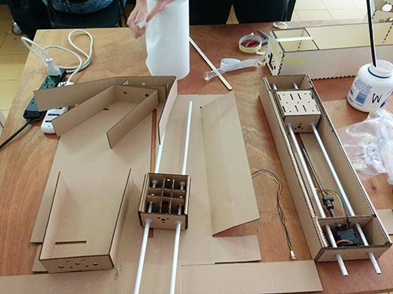

Exercise 16 - Mechanical design, machine design
The Granatina Machine
Costantino Bongiorno, Sabina Barcucci and Massimo Bianchini at WeMake FabLab decide to design a machine to pick up liquids: and prepare wonderful Granatina for summer and hot days!
The Granatina Machine uses a sirynge to pick a certain quantity of liquid from a vase A and releasing it into a Vase B. In its possible future development this machine could be used to calculate in a precise way the components for molding and casting activities. Or in alternative to prepare cocktails.

All three collaborate to develop this machine. In particular:
The Gestalt Nodes
We follow all the tutorials to use Fabnet, and connected Gestalt nodes for the three axis. Moreover, a first version of the machine has been prototyped laser cutting cardboard and drawing the first version of a basic GUI to control the steppers.
As shown in the pictures we did'nt use the suggested cable for RS485. We use instead a simpler bord with FTDI chip (to use it via Usb) and a RS485 ic. As next step I'll design a new fabnet with a RS485 chip. It would be a good to save money and adding some features on that board
As power source we use a power bench supply 12V DC (current around 2 amps).

Mechanical Design
I designed the X and Z axis using Sketchup. I first imported the DXF released by Nadia and redisigned it. I noticed that the module is in inch insted of SI dimensions, and some elements get "curropted" in the export. It was difficult to rely on dimensions and quotes (i.e. the holes on the carriage are not circles).
Onother reason to redisgn it was to have some small improvement of stiffness of the machine. The E axis results pretty heavy. Too heavy for cardbord and our layout
Time was not enough to work properly of modularization of connections between axis. I think that may improvements can be done on this topic.
Assembling the machine
All the axis have been firstly developed using cardboard in order to verify how work. Due to the particular structure of this machine the final three axis have been redesigned using plywood which has been cut using the laser. Finally the machine has been assembled.

Testing the machine
We follow all the instructions from various tutorials in the Fab academy archive. We download Python, then install wxGestalt in order to control and command the gestalt nodes and moving the machine. We use the template provided by the tutorial to move the nodes in order to test the machine. The final GUI has to be implemented as follow. Nodes 1 (X axis) has been tested alone to understand how to command and move it. Finally the same procedure has been adopted for the other three axis and finally Granatina works.
Creating the GUI and final algorithm to move the three axis is the final step to complete the machine. The GUI will have 7 buttons.


Videos
>
>
GUI
The simplest solution is to create a simple GUI which have 6 buttons. two buttons for each Axis as follow:
To control the machine we rely on the good interface created by Massimo Menichinelli. See here!
In order to make Granatina works we simply modified the moves:
moves = [[0,0,0],[0,80,0],[0,80,30],[0,0,30],[110,0,30],[110,40,30],[110,30,0],[110,0,0],[0,0,0]]